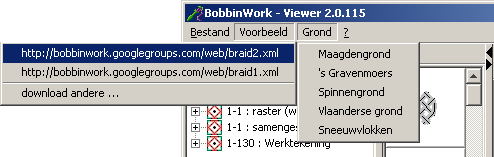
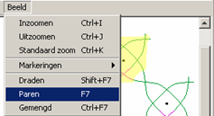
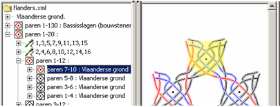
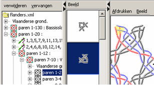
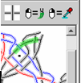
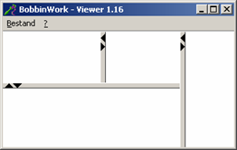
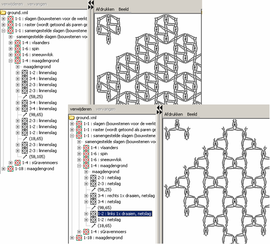

Snel aan de slag met de BobbinWork Viewer
start het programma
Tekening laden
Je kunt er simpelweg één uit het menu kiezen of kijken of de download pagina er meer heeft. Je eigen werktekeningen kun je ook aan de download pagina toevoegen.

Draden of paren
Je kunt eenvoudig van een parentekening naar een dradentekening omschakelen of omgekeerd

Onderdelen markeren ...
Blader door de boom om het overeenkomstige deel van de tekening te markeren

... en aanpassen
Verwijder de gemarkeerde slag (of groep slagen) of vervang deze

Draadstijl
Definieer de stijl (breedte/kleuren) van een draad
Pas de draadstijl toe of pak een draadstijl

Inzoomen kan het makkelijker maken om een draad te pakken te krijgen. Vooral bij complexe tekeningen kan het even duren tot de markering verschijnt.
Panelen
Versleep de scheidingsbalken of open/sluit een paneel met

Voorbeeld
Van een maagdengrond in linnenslagen naar een rozengrond in netslagen
